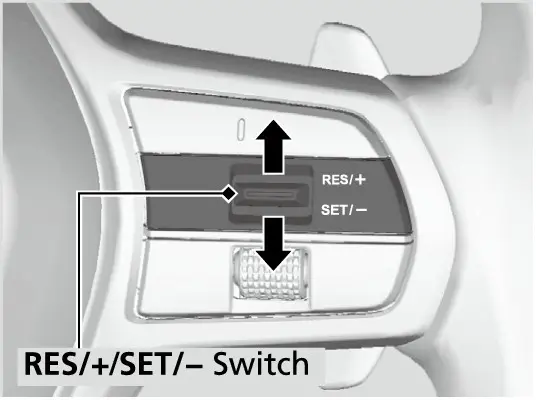
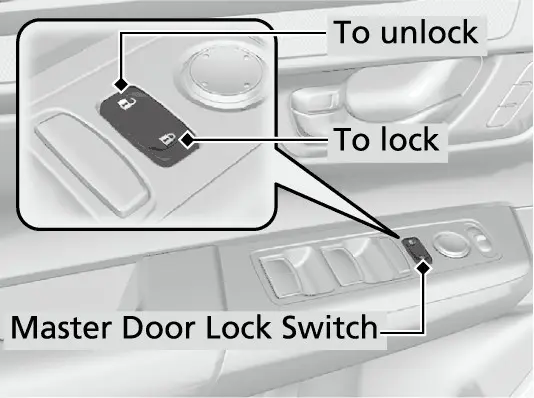

קאפיטל 28
קאמפלעטע קנעפל-ביי-קנעפל רעפערענץ
זייטן 408–424 אינעם PDF
ווי אזוי צו ניצן דעם קאפיטל
דער קאפיטל איז א מאפע פון יעדן קאנטראל וואס דער דרייווער ניצט גלייך מיט די הענט. ער גייט ארום דעם דרייווער'ס זיץ, זאנע נאך זאנע, און זאגט ביי יעדן קאנטראל וואו ער געפינט זיך, וואס ער טוט, און ווי אזוי מען ניצט אים. ווען א קאנטראל האט שוין זיין אייגענעם פולן קאפיטל, באקומט איר דא נאר א קורצן איבערבליק מיטן קאפיטל נומער, אנשטאט אלעס נאכאמאל איבערצוחזר'ן. ניצט עס ווי אן אינדעקס: ווען איר ווילט וויסן וואס א שאלטער טוט, גייט צו זיין זאנע.
די סדר איז די זעלבע סדר אין וועלכע אייערע הענט טרעפן די קאנטראלן: די סטירינג קאלום, די קנעפלען אויפן שטייער-ראד, די צוויי שטעקנס (stalks), דער מיטל סקרין, דער קליימעט פאנעל, די מיטל קאנסאל, די דעק אויבן, דער טיר פון דרייווער, דער זיץ, דער שליסל פאב, און צום סוף דער טעילגעיט.
די זאנע ביי די סטירינג קאלום
ENGINE START/STOP קנעפל
דער ENGINE START/STOP קנעפל (דער קנעפל צו אנצינדן און אויסלעשן דעם מאטאר) געפינט זיך אויפן דעשבארד, רעכטס פונעם שטייער-ראד. כדי אנצוצינדן דעם מאטאר, האלט דעם keyless remote (דעם שליסל פאב) אינעווייניג אין קאר, דריקט דעם ברעמז פעדאל, און דריקט דעם קנעפל. אויב איר דריקט דעם קנעפל אן דריקן דעם ברעמז, גייט דער power mode (דער שטראם-מאדָע) ווייטער אין א פעסטע סדר, אנשטאט אנצוצינדן דעם מאטאר.
Power מאדָעס (קנעפל געדריקט אן ברעמז)
| דריק | מאדָע | וואס ארבעט |
|---|---|---|
| אנהייב | VEHICLE OFF | דער קאר'ס שטראם איז אויס |
| 1טער דריק | ACCESSORY | אודיא סיסטעם און עטליכע צוגאבן |
| 2טער דריק | ON | אלע צוגאבן |
| 3טער דריק | VEHICLE OFF | שטראם נאכאמאל אויס |
איר קענט אויסלעשן דעם קאר נאר אין P. אויב איר דריקט דעם קנעפל ווען דער שיפט לעווער איז אין א אנדערע פאזיציע, גייט דער power mode אריבער צו ACCESSORY און נישט צו VEHICLE OFF. אויב דער קאר שטייט אין P אין ACCESSORY פאר 30 ביז 60 מינוט, גייט ער אויטאמאטיש אריבער אין א מאדָע ענליך צו VEHICLE OFF, כדי צו שיצן די באטעריע. ווען מען עפנט דעם דרייווער'ס טיר אין ACCESSORY, הערט מען א ווארענונג ביפ.
דער קאר טשעקט אויך וואו דער keyless remote געפינט זיך. אויב דער power mode איז נישט אויס, און איר נעמט ארויס דעם remote פונעם קאר און מאכט צו די טיר, קלינגט אן אלארם. אין ACCESSORY קלינגט עס נאר דרויסן. אין ON קלינגט עס אינעווייניג און דרויסן, און א ווארענונג אינדיקאטאר ווייזט זיך אויפן מיטער. אויב דער remote גייט ארויס פונעם קאר נאכדעם וואס דער מאטאר איז אנגעצונדן, קען מען מער נישט טוישן דעם power mode און נישט נאכאמאל אנצינדן דעם מאטאר. דער מאנואל ווארנט נישט אוועקצולייגן דעם remote אויפן דעשבארד אדער אין גלאוו באקס, און מערקט אן אז א שטויר-קעסטל קען בלאקירן זיין סיגנאל, אזוי אז דער power mode וועט זיך אפשר נישט טוישן. די פולע סדר פון אנצינדן דעם קאר ווערט ערקלערט אין קאפיטל 3.
רעזערוו סטארט ווען די remote באטעריע איז שוואך
דער זעלבער קנעפל האט א רעזערוו פונקציע. אויב די באטעריע פונעם remote איז שוואך, קלינגט דער ביפער, דער מיטער ווייזט To start, touch start button with emblem side of remote, דער קנעפל בלינקט, און דער מאטאר הייבט נישט אן.
אנצינדן מיט א שוואכע keyless remote באטעריע
- דריקט איינמאל דעם ENGINE START/STOP קנעפל. דער ביפער קלינגט און דער קנעפל בלינקט בערך 30 סעקונדעס.
- בשעת ער בלינקט, טאפט אן די מיטן פונעם קנעפל מיטן H לאגא פונעם keyless remote, ווען די קנעפלען פונעם remote קוקן צו אייך.
- דער ביפער קלינגט און דער קנעפל בלייבט אנגעצונדן בערך 10 סעקונדעס.
- אין די צייט, דריקט דעם ברעמז פעדאל און דריקט דעם ENGINE START/STOP קנעפל. דער מאטאר הייבט אן.

דער לעווער צו אדזשאסטן דעם שטייער-ראד
דער לעווער צו אדזשאסטן דעם שטייער-ראד געפינט זיך אונטער דער סטירינג קאלום, אויף דער לינקער זייט. דאס ראד לאזט זיך אדזשאסטן אין דער הייך און אין דער לענג, נענטער צו אייך אדער צום דעשבארד.
אדזשאסטן דעם שטייער-ראד
- שטעלט אפ דעם קאר. קיינמאל נישט אדזשאסטן דאס ראד בשעת'ן דרייוון.
- שטופט דעם לעווער אראפ.
- רוקט דאס ראד ארויף אדער אראפ, און אריין אדער ארויס, ביז איר זעט קלאר אלע מעסטערס און אינדיקאטארן אויפן אינסטרומענט פאנעל.
- ציט דעם לעווער ארויף צו פארשליסן דאס ראד.
- טשעקט אז עס איז פארשלאסן, דורך פרובירן צו רוקן דאס ראד ארויף, אראפ, אריין און ארויס. עס דארף זיך נישט רירן.
שטייער-ראד: לינקע זייט
Honda'ס feature guide שרייבט אז אויפן ראד זענען דא קנעפלען פאר קרוז קאנטראל, אודיא, Bluetooth HandsFreeLink (די הענט-פרייע טעלעפאן פארבינדונג), און דעם אינסטרומענט דיספליי. די לינקע זייט קאנטראלירט דעם אודיא און דעם 7-אינטש מיטער. די רעכטע זייט קאנטראלירט די דרייווער הילף סיסטעמען.
וואליום שאלטער און seek/skip קנעפלען
דער VOL+/VOL- שאלטער (וואליום שאלטער) אויף דער לינקער זייט ארבעט אזוי: דריקט אים ארויף צו מאכן הויכער, און אראפ צו מאכן שטילער. דערנעבן זענען די צוויי seek/skip קנעפלען (קנעפלען צו שפרינגען צום נעקסטן). וואס זיי טוען, הענגט אפ אינעם אודיא מקור, און די אינפארמאציע ווייזט זיך אויפן מיטער.
Seek/skip קנעפלען לויטן אודיא מקור
| מקור | קורצער דריק | דריקן און האלטן |
|---|---|---|
| AM/FM ראדיא | נעקסטע אדער פריערדיגע פריסעט סטאנציע | נעקסטע אדער פריערדיגע שטארקע סטאנציע |
| טעלעפאן, Bluetooth, USB, קאבל אדער סמארטפאון פארבינדונג | נעקסטער ליד, אדער צוריק צום אנהייב פונעם יעצטיגן אדער פריערדיגן ליד | נישט אנגעגעבן |
| USB פלעש דרייוו | נעקסטער אדער פריערדיגער ליד | נעקסטער אדער פריערדיגער פאלדער |
דער מאנואל מערקט אן אז די פונקציעס קענען זיך טוישן לויט דעם פארבונדענעם מכשיר, און עטליכע פונקציעס זענען אפשר נישט פאראן מיט יעדן Bluetooth מכשיר.
דאס לינקע ראדל און דער home קנעפל
דאס לינקע selector ראדל איז די הויפט קאנטראל פאר דעם 7-אינטש מיטער, וואס דער מאנואל רופט דעם A-type meter. עס האט דריי באוועגונגען: דרייען ארויף אדער אראפ צו סקראלן, דריקן צו אויסוועלן, און אויף עטליכע סקרינס דריקן און האלטן. דער home קנעפל, באצייכנט מיט א הייזל, זיצט דערנעבן. דריקט home צו גיין צום היים-סקרין פונעם דרייווער אינפארמאציע סיסטעם, דערנאך דרייט דאס ראדל צו גיין פון סקרין צו סקרין, ווי Range/Fuel, Speed/Time, Audio, Phone, Driver Attention, Maintenance, Safety Support, Brightness און Vehicle Settings. קאפיטל 6 גייט דורך יעדן סקרין. דער טייל רעדט נאר וועגן די קנעפל-באוועגונגען וואס איר וועט ניצן מערסטנס.
געווענליכע באוועגונגען מיטן לינקן ראדל
| אויפגאבע | סקרין | באוועגונג |
|---|---|---|
| טוישן Trip A / Trip B | Range/Fuel אדער Speed/Time | דרייען דאס ראדל |
| ריסעטן א טריפ מעסטער | ווען דער טריפ ווערט געוויזן | דריקן, דערנאך אויסוועלן Reset (גייט צוריק צו 0.0) |
| טוישן אודיא מקור | Audio | דריקן, דרייען דורך די מקורות, דריקן צו אויסוועלן |
| אדזשאסטן די ליכטיקייט פונעם מיטער | Brightness | דריקן, דרייען ארויף ליכטיגער אדער אראפ טונקעלער, דריקן ארויסצוגיין |
| מייל אדער קילאמעטער | No content | דריקן און האלטן |
| אראפנעמען VSA traction control | VSA | דרייען צו Reduce traction control, דריקן צו צייכענען אדער אויסמעקן |
ריסעטן א טריפ מעסטער ריסעט אויך דעם דורכשניטליכן בענזין פארברויך פון יענעם טריפ. אויפן Audio סקרין ציילט דער מאנואל אויס די מקורות: FM, AM, iPod, USB, Bluetooth, Apple CarPlay און Android Auto, און עס ווייזן זיך נאר מקורות מיט א פארבונדענעם מכשיר. די ליכטיקייט סעטינג ארבעט אין ON. די ליכטיקייט פון די מעסטערס אדזשאסט זיך אויך אויטאמאטיש לויט דער ליכט דרויסן, אזוי אז ווען עס איז העל קען מען טוישן די סעטינג, אבער מען וועט נישט זען קיין ענדערונג. יעדעס מאל וואס איר דריקט און האלט אויף No content, טוישן זיך די מאס-איינהייטן צווישן miles/mph און km/km/h, און א באשטעטיגונג סקרין ווייזט זיך פאר עטליכע סעקונדעס. דער No content סקרין ווייזט אויך א דיספליי נאר מיטן טאכאמעטער, אפילו אויב איר האט אויסגעלאשן דעם טאכאמעטער אין די סעטינגס.


צוקומען צו Vehicle settings אויפן מיטער
דאס לינקע ראדל עפנט אויך Vehicle settings (די קאר סעטינגס) אויפן מיטער. די באדינגונגען לויטן מאנואל: power mode אין ON, דער קאר שטייט אינגאנצן, און דער שיפט לעווער אין P. דריקט home, דרייט צום סעטינגס סקרין, און דריקט דאס ראדל. פון דארט קען מען צוקומען צו TPMS calibration, Driver assist system setup, Meter setup, Keyless access setup, Lighting setup, Door setup, Maintenance reset און Default all. יעדע גרופע ווערט ערקלערט אין איר אייגענעם קאפיטל: TPMS אין קאפיטל 16, טיר און keyless סעטינגס אין קאפיטל 21, לייכטן אין קאפיטל 11, און maintenance reset אין קאפיטל 19.
ביישפיל: שטעלן Trip A זיך אויטאמאטיש צו ריסעטן ביי יעדן אנפילן
- אין P, ווען דער קאר שטייט אינגאנצן און דער power mode איז אין ON, דריקט home און דרייט דאס לינקע selector ראדל צום סעטינגס סקרין, דערנאך דריקט דאס ראדל.
- דרייט דאס ראדל ביז Meter setup ווייזט זיך, דערנאך דריקט עס.
- דרייט ביז "Trip A" reset timing ווייזט זיך, דערנאך דריקט דאס ראדל.
- וועלט אויס When fully refueled (די אנדערע ברירות זענען IGN OFF, Manually reset און Back), דערנאך דריקט דאס ראדל.
- וועלט אויס Back און דריקט דאס ראדל, און טוט עס נאכאמאל ביז איר קומט צוריק צום נארמאלן סקרין.
אויסגעוועלטע מיטער סעטינגס און פאבריק סעטינגס
| סעטינג | ברירות | פאבריק סעטינג |
|---|---|---|
| Trip A / Trip B reset timing | When fully refueled, IGN OFF, Manually reset | Manually reset |
| Adjust alarm volume | High, Mid, Low | Mid |
| Adjust outside temp. display | -5°F ביז +5°F | 0°F± |
| Tachometer | ON, OFF | ON |
| Rear seat reminder | ON, OFF | ON |
| Driver attention monitor | Tactile and audible, Tactile, OFF | Tactile and audible |
שטייער-ראד: רעכטע זייט (דרייווער הילף)
די פינף קנעפלען
דער אונער'ס מאנואל ציילט אויס פינף קאנטראלן אויף דער רעכטער זייט: דער MAIN קנעפל מיטן קרוז סימבאל, דער LKAS קנעפל, דער interval קנעפל, דער CANCEL קנעפל, און דער RES/+ SET/- שאלטער. דער MAIN קנעפל שטעלט אדאפטיווע קרוז קאנטראל (ACC) מיט Low Speed Follow (נאכפאלגן ביי לאנגזאמע גיכקייט(אין standby)גרייט-שטאנד). דריקט אים נאכאמאל צו אויסלעשן דעם סיסטעם. דער LKAS קנעפל שטעלט דעם Lane Keeping Assist System (די ליין-האלטן הילף) און Traffci Jam Assist (די הילף אין טראפיק) אין standby, אדער קענסלט זיי. דער מיטער ווייזט דעם מצב פון יעדן סיסטעם מיט א קאליר: ווייס פאר standby, גרין פאר אן, אמבער (געל-מאראנץ) פאר א פראבלעם. די פולע ערקלערונג איז אין קאפיטלען 9 און 10.


LKAS לעשט זיך אויס יעדעס מאל וואס איר שטעלט אפ דעם מאטאר. אויב איר דריקט דעם LKAS קנעפל ווען אלע באדינגונגען זענען שוין דא, גייט ער גלייך אן, אן דורכגיין standby.
RES/+ SET/- שאלטער און CANCEL
דער RES/+ SET/- שאלטער איז א וויגל-שאלטער. ווען דער סיסטעם איז אין standby און דער קאר פארט בערך 20 mph אדער מער, נעמט אראפ דעם פוס פונעם פעדאל און דריקט דעם שאלטער ארויף אדער אראפ. די גיכקייט ווערט געשטעלט אין דעם מאמענט וואס איר לאזט אים אפ. יעדער קורצער דריק נאכדעם טוישט די געשטעלטע גיכקייט מיט בערך 1 mph, און האלטן דעם שאלטער טוישט עס מיט בערך 5 mph. אונטער בערך 20 mph, ווען מען דריקט דעם שאלטער בשעת'ן פארן אן ברעמזן, ווערט געשטעלט בערך 20 mph, נישט קוקנדיג אויף דער יעצטיגער גיכקייט. ווען דער קאר שטייט, קען מען שטעלן א גיכקייט אפילו מיטן ברעמז פעדאל געדריקט.

דער CANCEL קנעפל שטעלט אפ דאס קרוזן, אבער לאזט דעם סיסטעם אין standby, אזוי אז דער אינדיקאטאר ווערט פון גרין צוריק ווייס. דריקן דעם ברעמז בשעת'ן פארן פאראויס טוט די זעלבע זאך. נאך א קענסל בלייבט די פריערדיגע געשטעלטע גיכקייט אויפן מעסטער אין גרוי, און דריקן דעם שאלטער ארויף ברענגט זי צוריק, אפילו פון שטיין אין ACC מאדָע. אויסלעשן דעם סיסטעם מיטן MAIN קנעפל מעקט אויס די געשטעלטע גיכקייט. כדי צו שטעלן א גיכקייט נאכאמאל, מוז מען ערשט דריקן MAIN.
Interval קנעפל און Cruise mode
דער interval קנעפל שטעלט דעם אפשטאנד הינטער א דעטעקטעטן קאר. יעדער דריק גייט דורך furthest, far, mid און nearest, און די interval שטריכן אויפן מיטער ווייזן אייער ברירה. דער אפשטאנד וואקסט מיט דער גיכקייט.
ACC אפשטאנד סעטינגס (פונעם אונער'ס מאנואל)
| סעטינג | ביי 50 mph | ביי 65 mph | צייט אפשטאנד |
|---|---|---|---|
| Nearest | 72 ft | 95 ft | 1 sec |
| Mid | 112 ft | 142 ft | 1.5 sec |
| Far | 154 ft | 199 ft | 2.1 sec |
| Furthest | 208 ft | 274 ft | 2.9 sec |
דער interval קנעפל האט א צווייטע ארבעט. דריקט און האלט אים איין סעקונדע, און Cruise mode selected ווייזט זיך אויפן מיטער פאר צוויי סעקונדעס. דער סיסטעם גייט דאן אריבער צו געווענליכן קרוז קאנטראל, וואס האלט נישט קיין אפשטאנד פונעם קאר פאראויס. האלט דעם קנעפל נאכאמאל איין סעקונדע צו גיין צוריק צו אדאפטיוו. דער מאנואל זאגט אז מען קען נישט טוישן ווען א גיכקייט איז געשטעלט, אדער ווען דער סיסטעם איז נישט אקטיוו. אין געווענליכן Cruise mode קען מען נישט שטעלן אדער צוריקברענגען אונטער 20 mph, און קרוז קענסלט זיך אויטאמאטיש ביי 17 mph אדער ווייניגער.

לינקער שטעקן: לייכטן און בלינקערס
ליכט שאלטער
דער עק פונעם לינקן שטעקן דרייט זיך דורך פיר פאזיציעס: AUTO, פארקינג לייכטן, הויפט לייכטן (העדלייטס), און OFF. אין AUTO, ווען דער power mode איז אין ON, צינדן זיך די לייכטן אן אליין לויט דער ליכטיקייט דרויסן. AUTO צינדט אויך אן די העדלייטס אויב איר ניצט די ווייפערס עטליכע מאל, און זיי לעשן זיך אויס עטליכע מינוט נאכדעם וואס די ווייפערס שטעלן זיך אפ. אין AUTO ווען עס איז טונקל, צינדן זיך די לייכטן אויך אן ווען איר עפנט א טיר מיטן שליסל.
דרייען דעם שאלטער צו OFF ארבעט נאר אין P אדער מיטן פארקינג ברעמז אנגעצויגן, און דער שאלטער שפרינגט צוריק. די לייכטן קומען צוריק אן אויטאמאטיש אויב איר דרייט נאכאמאל צו OFF, אדער אויב איר גייט ארויס פון P מיטן פארקינג ברעמז אפגעלאזט. האלט דעם שאלטער אין AUTO פאר נארמאל דרייוון. אויב דער שאלטער איז געבליבן אויף א מאנועלע פאזיציע ווען איר לעשט אויס דעם קאר, קלינגט א ביפער ווען דער דרייווער'ס טיר עפנט זיך. קאפיטל 11 ערקלערט יעדע ליכט סעטינג, אריינגערעכנט דעם light sensor (ליכט-סענסאר) און דעם אויטאמאטישן אויסלעש טיימער.
הויכע ליכט און auto high beam
ווען די העדלייטס זענען אן, שטופט דעם שטעקן פאראויס, אוועק פון אייך, פאר הויכע ליכט, און ציט אים צוריק צו גיין צוריק צו נידעריגע ליכט. כדי צו בלינקען מיט די הויכע ליכט, למשל צו געבן א סיגנאל צו א צווייטן דרייווער, ציט דעם שטעקן צו אייך און לאזט אפ. די לייכטן גייען צוריק צו נידעריג ווען איר לאזט אפ. דער בלויער high beam אינדיקאטאר ווייזט זיך אויפן מיטער ווען די הויכע ליכט זענען אן.
דער EX האט אויך auto high beam (אויטאמאטישע הויכע ליכט), וואס טוישט פאר אייך צווישן הויכע און נידעריגע ליכט ביינאכט. עס האט אן אייגענעם גרינעם אינדיקאטאר, און מען צינדט עס אן אדער אויס אין Vehicle settings אונטער Lighting setup, וואו עס איז פון פאבריק אן. קאפיטל 11 ערקלערט ווען עס ארבעט.


בלינקערס
די בלינקערס ניצן דעם זעלבן לינקן שטעקן, ארויף אדער אראפ, און זיי ארבעטן נאר ווען דער power mode איז אין ON. שטופט דעם שטעקן אינגאנצן ארויף פאר א רעכטע דריי, אדער אינגאנצן אראפ פאר א לינקע דריי, און ער בלינקט ביז דאס שטייער-ראד קומט צוריק. פאר טוישן ליין, ניצט דעם one-touch signal (איין-טאפ בלינקער): שטופט דעם שטעקן לייכט ארויף אדער אראפ און לאזט אפ, און דער בלינקער בלינקט 3 מאל. אויב איר טוישט אייער מיינונג בשעת ער בלינקט, שטעלט אים אפ א לייכטער שטופ אין דער פארקערטער ריכטונג. דער פאסיגער גרינער פייל בלינקט אויפן מיטער.

רעכטער שטעקן: ווייפערס און וואשערס
פארנט ווייפערס
די ווייפערס און דער וואשער פון דער פראנט שויב ארבעטן ווען דער power mode איז אין ON. רוקט דעם רעכטן שטעקן ארויף אדער אראפ דורך OFF, INT (מיט הפסקות), LO און HI. רוקט אים צו MIST, און די ווייפערס ארבעטן גיך נאר כל זמן איר האלט אים, וואס איז גוט פאר א איינמאליגע שפריץ פון א טראק. ציט דעם שטעקן צו אייך צו שפריצן וואשער-פליסיגקייט. ווען איר לאזט אים אפ פאר מער ווי איין סעקונדע, הערט אויף דאס שפריצן, די ווייפערס ווישן נאך צוויי אדער דריי מאל, און דערנאך שטעלן זיי זיך אפ.
ביי מאדעלן מיט א רינג צו אדזשאסטן די הפסקות, וואס דער מאנואל באצייכנט אלס נישט אויף אלע מאדעלן, טוישט דרייען דעם רינג די הפסקה. אין INT ווערט די הפסקה אויטאמאטיש קורצער ווען מען פארט גיכער, און ביי גיכקייט ווערט די קורצסטע הפסקה די זעלבע ווי LO. דער ווייפער מאטאר קען זיך אויף א קורצע צייט אפשטעלן כדי נישט צו איבערלאדן, און ער קומט צוריק צו נארמאל אין עטליכע מינוט.
הינטערשטער ווייפער
דער הינטערשטער ווייפער ווערט קאנטראלירט דורכן דרייענדיגן טייל פונעם זעלבן רעכטן שטעקן, מיט OFF, INT און ON. דרייען ווייטער פון ON צו דער וואשער פאזיציע שפריצט די הינטערשטע שויב און לאזט ארבעטן דעם הינטערשטן ווייפער כל זמן איר האלט עס. ווען איר לאזט אפ, הערט אויף דאס שפריצן, און דער ווייפער גייט צוריק צו זיין אויסגעוועלטער סעטינג נאך עטליכע ווישן.
דער הינטערשטער ווייפער ארבעט אויך אויטאמאטיש. ווען איר שיפט אין R בשעת די פארנט ווייפערס ארבעטן, ארבעט דער הינטערשטער ווייפער אפילו אויב זיין שאלטער איז אויס: מיט הפסקות אויב די פארנט ווייפערס זענען אויף INT, און אן אויפהער אויב זיי זענען אויף LO אדער HI. ווינטער פלעג פאר ווייפערס איז אין קאפיטל 24.
קאנטראלן ביים מיטל סקרין
דער 9-אינטש טאטש סקרין האט עטליכע פיזישע קאנטראלן דערנעבן. דער home קנעפל גייט צום היים-סקרין. דער Connect קנעפל עפנט Apple CarPlay אדער Android Auto. דער VOL/AUDIO קנאפ צינדט אן און לעשט אויס דעם אודיא סיסטעם ווען מען דריקט אים, און אדזשאסט דעם וואליום ווען מען דרייט אים. דער אודיא סיסטעם דארף דעם power mode אין ACCESSORY אדער ON.
אלעס אנדערש טוט מען אויפן סקרין, מיט אנטאפן, שטרייכן און סקראלן. עטליכע זאכן ווערן גרוי בשעת'ן דרייוון כדי צו פארמינערן אפלענקונג, און ווערן צוגענגליך ווען דער קאר שטעלט זיך אפ. הענטשקעס קענען שוואכן אדער אפשטעלן דעם סקרין'ס רעאקציע, און די סענסיטיוויטעט פונעם טאטש סקרין קען מען טוישן אין די סעטינגס. דער פולער סקרין טור איז אין קאפיטל 7, און פארבינדן אייער Pixel 9a איז אין קאפיטל 8.
קליימעט פאנעל
AUTO, טעמפעראטור קנעפלען און ON/OFF
אונטערן סקרין זיצט דער dual-zone (צוויי-זאנע) אויטאמאטישער קליימעט פאנעל. זיינע הויפט קאנטראלן זענען דער AUTO קנעפל און צוויי טעמפעראטור דריי-קנעפלען, דרייווער לינקס און פאסאזשיר רעכטס. ניצט דעם סיסטעם ווען דער מאטאר לויפט. דריקט AUTO, שטעלט אייער טעמפעראטור, און דער סיסטעם וועלט אויס די פען גיכקייט און די לופט ריכטונג. ביי די עקן פון דער סקאלע ווייזט דער דיספליי Lo אדער Hi. דער ON/OFF קנעפל לעשט אויס דעם גאנצן סיסטעם, און ווען איר צינדט אים נאכאמאל אן, קערט ער זיך צוריק צו אייער לעצטע איינשטעלונג.
אויב איר דריקט סיי וועלכן אנדערן קליימעט קנעפל אין AUTO, באקומט יענער קנעפל פארטריט און דער AUTO אינדיקאטאר לעשט זיך אויס, אבער אלעס אנדערש בלייבט אויטאמאטיש. גלייך נאכן דריקן AUTO הייבט דער פען אפשר נישט גלייך אן; דאס איז כדי נישט אריינצובלאזן קאלטע לופט פון דרויסן. בשעת אן Auto Idle Stop (דאס אויטאמאטישע אפשטעלן פונעם מאטאר ביים שטיין) שטעלט זיך אפ דער A/C און נאר דער פען ארבעט. אין ECON מאדָע קען די קילונג זיין שוואכער. קאפיטל 12 ערקלערט די קליימעט קאנטראל אינגאנצן.
ריסירקולאציע קנעפל
דער ריסירקולאציע קנעפל טוישט צווישן צוויי לופט מקורות. ווען זיין לעמפל איז אן, דרייט דער סיסטעם ארום די אינעווייניגסטע לופט, וואס העלפט שנעל אפקילן א הייסן קאר, אדער אפהאלטן אויף א מאמענט שלעכטע לופט פון דרויסן. ווען דאס לעמפל איז אויס, איז ער אין fresh air מאדָע (פרישע לופט) און ברענגט אריין לופט פון דרויסן. דער מאנואל רעקאמענדירט צו האלטן fresh air מאדָע אין נארמאלע מצבים, ווייל בלייבן אויף ריסירקולאציע קען מאכן די פענצטער אנלויפן פון פייכטקייט.
Windshield defroster און הינטערשטער defogger
דער windshield defroster קנעפל (צו אפטויען די פראנט שויב) שיקט לופט צו דער פראנט שויב, צינדט אן דעם A/C צו טרוקענען די לופט, און גייט אויטאמאטיש אריבער צו fresh air מאדָע. דריקט אים נאכאמאל און דער סיסטעם קערט זיך צוריק צו די פריערדיגע סעטינגס. דריקן אים בשעת אן Auto Idle Stop צינדט נאכאמאל אן דעם מאטאר.
דער rear defogger קנעפל (פאר דער הינטערשטער שויב), וואס ביים EX הייצט אויך די זייט שפיגלען, ווארעמט די הינטערשטע שויב און די שפיגלען ווען דער power mode איז אין ON. ער לעשט זיך אליין אויס נאך 10 ביז 30 מינוט, לויט דער טעמפעראטור דרויסן, אבער ביי 32°F אדער נידעריגער בלייבט ער אן. לעשט אים אויס אליין ווען די שויב איז שוין קלאר, ווייל ער נעמט אסאך שטראם. פארמיידט אים צו לאזן לויפן לאנגע צייט ביים שטיין, ווייל דאס קען שוואכן די באטעריע.
SYNC קנעפל
דער SYNC קנעפל פארבינדט ביידע זאנעס. דריקט SYNC און דער דרייווער'ס קנעפל שטעלט איין טעמפעראטור פאר ביידע זייטן. כדי זיי נאכאמאל צו צעטיילן, דריקט SYNC נאכאמאל, אדער פשוט דרייט דעם פאסאזשיר'ס קנעפל, און דער סיסטעם גייט צוריק צו dual מאדָע, וואו יעדע זייט ווערט באזונדער געשטעלט. דער מאנואל לייגט צו אז דריקן דעם ON/OFF קנעפל שטעלט אויך דעם סיסטעם אין synchronization מאדָע.
מיטל קאנסאל
שיפט לעווער
דער EX ניצט א געווענליכן שיפט לעווער אויף דער מיטל קאנסאל, נישט די קנעפלען פון די היברידן. די פאזיציעס זענען P, R, N און D. כדי צו שיפטן, דריקט פריער שטארק דעם ברעמז פעדאל, דערנאך ניצט דעם release קנעפל (אפלאז-קנעפל) אויפן לעווער. דער מאנואל ווארנט אז דער לעווער וועט זיך אפשר נישט רירן אויב איר האלט דעם release קנעפל פארן דריקן דעם ברעמז, דעריבער ברעמזט שטענדיג פריער.
- טוישט צווישן D און R נאר ווען דער קאר שטייט אינגאנצן מיטן ברעמז געדריקט; שיפטן בשעת'ן פארן קען קאליע מאכן די טראנסמישאן.
- טשעקט דעם שיפט פאזיציע אינדיקאטאר אויפן מיטער פאר איר פארט אוועק.
- אויב דער טראנסמישאן סיסטעם אינדיקאטאר בלינקט בשעת'ן דרייוון, פארמיידט שטארק צו גאזן, און לאזט א דילער טשעקן דעם קאר וואס שנעלער.
- אין גאר קאלטע טעמפעראטורן (-22°F) קען די געוויזענע פאזיציע זיך א ביסל פארשפעטיגן; באשטעטיגט עס פארן דרייוון.
- מיט א קאלטן מאטאר קען דער קאר זיך גאנץ א ביסל רירן אפילו אין N.
DRIVE MODE שאלטער
לעבן דעם לעווער איז דער DRIVE MODE שאלטער (דער שאלטער פאר דרייוו מאדָעס). יעדער דריק טוישט דעם מאדָע, און דער אויסגעוועלטער מאדָע ווייזט זיך אויפן מיטער. דער EX האט דריי מאדָעס, און דער נעקסטער סטארט געדענקט נישט שטענדיג אייער ברירה.
EX דרייוו מאדָעס
| מאדָע | וואס ער טוט | נעקסטע סטארט |
|---|---|---|
| NORMAL | באלאנסירט רעאקציע און באקוועמליכקייט | NORMAL |
| ECON | פאר שפארן בענזין; לאנגזאמער גאזן, שוואכערע קילונג | ECON |
| SNOW | מאקסימום קאנטראל אויף שניי דורך מאטאר סעטינגס; האלט Auto Idle Stop אויסגעלאשן | NORMAL |


דער מאדָע טוישט זיך אפשר נישט אין געוויסע דרייוו מצבים, אדער ווען עס איז דא א סיסטעם פראבלעם, און דאן ווייזט זיך א מעלדונג. SNOW מאדָע האט גרעניצן; ווינטער טייערס אדער קייטן, לאנגזאמערע גיכקייט און מער אפשטאנד זענען נאך אלץ נויטיג. קאפיטל 14 ערקלערט יעדן מאדָע באריכות.
עלעקטרישער פארקינג ברעמז שאלטער
דער שאלטער פונעם עלעקטרישן פארקינג ברעמז איז אויף דער קאנסאל. כדי אים אנצוציען, ציט אים ארויף לייכט און פעסט; דאס ליכטל אינעם שאלטער און דער רויטער ברעמז אינדיקאטאר צינדן זיך אן. מען קען אים אנציען יעדע צייט וואס די באטעריע האט שטראם, אין סיי וועלכן power mode. כדי אים אפצולאזן, מוז דער power mode זיין ON: דריקט דעם ברעמז פעדאל, דערנאך דריקט דעם שאלטער אראפ.


דער פארקינג ברעמז לאזט זיך אויך אפ אויטאמאטיש ווען איר דריקט לייכט אויפן גאז, כל זמן איר זענט אנגעשנאלט מיטן דרייווער'ס סיט בעלט, דער מאטאר לויפט, און דער לעווער איז נישט אין P אדער N. ארויף א בארג קען דארפן מער גאז. אין א נויט פאל, ווען מען ציט ארויף און האלט דעם שאלטער בשעת'ן דרייוון, ברעמזט דער VSA סיסטעם אלע פיר רעדער ביז דער קאר שטעלט זיך אפ, און דערנאך ציט זיך אן דער פארקינג ברעמז. מען קען נישט אנציען און נישט אפלאזן דעם פארקינג ברעמז אויב די באטעריע איז טויט. קאפיטל 17 ערקלערט די אויטאמאטישע פארקינג ברעמז פונקציע און די סדר פאר א קאר וואש.
Automatic brake hold קנעפל
לעבן דעם פארקינג ברעמז איז דער automatic brake hold קנעפל (די אויטאמאטישע ברעמז-האלט פונקציע). מיטן סיט בעלט אנגעשנאלט און דעם מאטאר לויפנדיג, דריקט אים, און דער סיסטעם אינדיקאטאר צינדט זיך אן. יעצט, ווען איר שטעלט זיך אפ אינגאנצן, און דער לעווער איז נישט אין P אדער R, ווארט ביז דער brake hold אינדיקאטאר צינדט זיך אן, דערנאך הייבט אויף דעם פוס. דער קאר ווערט געהאלטן ביז 10 מינוט. דריקט דעם גאז צו פארן ווייטער; דער סיסטעם בלייבט אן פארן נעקסטן אפשטעל.


כדי אויסצולעשן דעם סיסטעם, דריקט דעם קנעפל. אויב דער קאר ווערט אין יענעם מאמענט געהאלטן, דריקט דעם קנעפל מיטן פוס אויפן ברעמז. די אן אדער אויס סעטינג ווערט געדענקט ביים נעקסטן סטארט. די האלטונג קענסלט זיך און דער פארקינג ברעמז ציט זיך אן, אויב דאס האלטן דויערט מער ווי 10 מינוט, דער דרייווער'ס סיט בעלט ווערט אפגעשנאלט, דער מאטאר ווערט אויסגעלאשן, אדער דער סיסטעם האט א פראבלעם.
Hill Descent Control קנעפל
דער Hill Descent Control קנעפל (הילף אראפצופארן פון א בארג) צינדט אן דעם סיסטעם וואס האלט א גלייכע גיכקייט אראפ א שטאציגן שיפוע, אן דעם פוס אויפן ברעמז. דריקט אים אונטער בערך 12 mph. א ווייסער אינדיקאטאר מיינט standby, און גרין מיינט אז ער ארבעט. ער ארבעט ביי בערך 2 ביז 12 mph, בארג אראפ, ווען קיין פעדאל איז נישט געדריקט. כדי צו טוישן די געשטעלטע גיכקייט, דריקט דעם גאז אדער ברעמז און לאזט אפ ביי דער גיכקייט וואס איר ווילט.

דריקט דעם קנעפל נאכאמאל צו אויסלעשן דעם סיסטעם. ער לעשט זיך אויך אויס אויטאמאטיש ביי בערך 37 mph, און יעדעס מאל וואס איר לעשט אויס דעם מאטאר. די ברעמז לייכטן צינדן זיך אן ווען ער ארבעט, און איר קענט אפשר שפירן א ציטערן אינעם פעדאל אדער הערן ווי ער ארבעט. לאנגע באנוץ קען אנהייצן די ברעמזן און שטעלן דעם סיסטעם צייטווייליג אין standby. ער גייט אפשר נישט אן אויף לייכטע שיפועים, און ער קען נישט האלטן די גיכקייט אויף יעדן זייער שטאציגן אדער גליטשיגן בארג.
טשארדזשן און שטויר-ערטער
דער רעשט פון דער קאנסאל איז שטויר-פלאץ און שטראם. Honda'ס 2026 ספעציפיקאציעס ציילן אויס א Qi וויירלעס טשארדזשינג פעד, איין USB-C סמארטפאון/ אודיא פארט און איין USB-C טשארדזש פארט (3.0 A) פארנט, און צוויי USB-C טשארדזש פארטס (3.0 A) פאר די הינטערשטע זיצן. Honda'ס feature guide באשרייבט דעם וויירלעס טשארדזשער אלס א 15-וואט Qi-קאמפאטיבלן פעד אויף דער דרייווער'ס זייט, מיט א טאץ אונטער די פארנט פארטס וואס האלט צוויי טעלעפאנען, צוויי טעפל-האלטערס אין דער מיטן פון דער קאנסאל, און א גרויסן שטויר-קעסטל אונטער דער ארעם-לענע וואס הייבט זיך אויף.
דער מאנואל באשרייבט אז מען דריקט און האלט א קאנטראל צו אנצינדן און אויסלעשן דעם וויירלעס טשארדזשער. איינשטעלן און ניצן מיט אייער טעלעפאן איז אין קאפיטלען 7 און 8.
די דעק אויבן
שאלטער פאר די אינעווייניגע לייכטן
אויף דער דעק, די פארנט overhead קאנסאל האט דעם שאלטער פאר די אינעווייניגע לייכטן מיט דריי פאזיציעס. ON האלט די אינעווייניגע לייכטן אן, סיי ווען די טירן זענען אפן און סיי פארמאכט. Door activated (לויט די טירן), די טעגליכע סעטינג, צינדט זיי אן ווען סיי וועלכע טיר עפנט זיך, ווען דער דרייווער'ס טיר ווערט אויפגעשלאסן, אדער ווען איר שטעלט דעם power mode אויף VEHICLE OFF. OFF האלט זיי שטענדיג אויס.
אין door activated ווערן די לייכטן לאנגזאם אויסגעלאשן בערך 30 סעקונדעס נאכדעם וואס די טירן פארמאכן זיך . זיי לעשן זיך אויך אויס נאך בערך 30 סעקונדעס אויב איר שליסט אויף אן עפענען, אדער לעשט אויס דעם קאר אן עפענען א טיר. זיי לעשן זיך גלייך אויס ווען איר פארשליסט דעם דרייווער'ס טיר, פארמאכט עס אין ACCESSORY, אדער שטעלט דעם power mode אויף ON. אויב טירן בלייבן אפן ווען דער קאר איז אויס, לעשן זיך די לייכטן אויס נאך בערך 15 מינוט. די צייט פונעם אויסלעשן (30 ,60 אדער 15 סעקונדעס; פון פאבריק 30) ווערט געשטעלט אין Vehicle settings אונטער Lighting setup.
מאפ לייכטן
לעבן דעם הויפט שאלטער זענען די LED מאפ ליכט שאלטערס, פארנט און הינטן. דריקט א שאלטער צו אנצינדן זיין ליכט, און דריקט נאכאמאל צו אויסלעשן. אויב דער הויפט שאלטער איז אין door activated און א טיר איז אפן, וועט דריקן דעם מאפ ליכט שאלטער נישט אויסלעשן די ליכט. די ליכט אינעם לאסט-פלאץ דארף נישט קיין שאלטער; זי צינדט זיך אן ווען איר עפנט דעם טעילגעיט.
מונרוף שאלטער
דער איין-טאפ עלעקטרישער מונרוף שאלטער איז אויך אין דער overhead קאנסאל.
ווי דער מונרוף שאלטער ארבעט
| באוועגונג | רעזולטאט |
|---|---|
| ציען צוריק פעסט | עפנט זיך אינגאנצן |
| שטופן פאראויס פעסט | פארמאכט זיך אינגאנצן |
| ציען אדער שטופן קורץ בשעת ער רירט זיך | שטעלט זיך אפ אינמיטן |
| ציען אדער שטופן לייכט און האלטן | רוקט זיך צו א טייל-פאזיציע |
| דריקן די מיטן | הייבט אויף דעם הינטערשטן עק |
| שטופן פאראויס פעסט פון אויפגעהויבן | פארמאכט זיך |
דער מונרוף ארבעט אין ON און ביז 10 מינוט נאכדעם וואס איר לעשט אויס דעם קאר, ביז א פארנט טיר עפנט זיך. אויב ער שפירט א ווידערשטאנד, דרייט ער זיך איבער אין דער פארקערטער ריכטונג און שטעלט זיך אפ; דאס שפירן הערט אויף פונקט פארן אינגאנצן פארמאכן, כדי ער זאל קענען פארזיגלען.
דער טיר פון דרייווער
טיר לאקס
אויף דער ארעם-לענע פונעם דרייווער'ס טיר, דער מאסטער door lock שאלטער פארשליסט אדער שליסט אויף אלע טירן, דעם טעילגעיט און דאס בענזין טירל אויף איינמאל. דער לאק-טאב אויף יעדער טיר ארבעט אויך: שטופט אים פאראויס צו פארשליסן, ציט אים צוריק צו אויפשליסן. פארשליסן מיטן דרייווער'ס טאב פארשליסט אלעס, אבער אויפשליסן דערמיט עפנט נאר דעם דרייווער'ס טיר און דאס בענזין טירל.

ציען א פארנט אינעווייניגן טיר האנטל שליסט אויף און עפנט די טיר מיט איין באוועגונג, און פון דער דרייווער'ס זייט שליסט עס אויך אויף אלע אנדערע טירן. כדי דאס צו פארמיידן איינמאל, שליסט אויף מיטן דרייווער'ס טאב, פארשליסט נאכאמאל, דערנאך עפנט די טיר. פאר א שטענדיגע ענדערונג, שטעלט Auto door unlock אויף OFF אין Vehicle settings. קינדער דארפן פארן אויף די הינטערשטע זיצן, וואו עס זענען דא childproof locks (קינדער-זיכערע לאקס). אויטאמאטישע לאק סעטינגס זענען אין קאפיטל 21.
עלעקטרישע פענצטער
די שאלטערס פאר די עלעקטרישע פענצטער זענען אויפן דרייווער'ס טיר, און די דרייווער'ס זייט קאנטראלירט אלע פיר פענצטער. ביידע פארנט פענצטער אויפן EX האבן auto up און down (אויטאמאטיש ארויף און אראפ). דריקט א שאלטער לייכט אראפ און האלט, צו עפענען א טייל, אדער ציט אים לייכט ארויף און האלט, צו פארמאכן א טייל. דריקט פעסט אראפ אדער ציט פעסט ארויף, און דער פענצטער גייט אינגאנצן; א קורצער טאפ שטעלט אים אפ.
דער power window lock קנעפל (פענצטער לאק) לאזט נאר דעם דרייווער'ס פענצטער ארבעטן, און זיין אינדיקאטאר צינדט זיך אן; ניצט עס ווען א קינד זיצט הינטן. די פענצטער ארבעטן אין ON און ביז 10 מינוט נאכן אויסלעשן, ביז א פארנט טיר עפנט זיך. א פענצטער וואס פארמאכט זיך אויטאמאטיש דרייט זיך איבער אויב ער שפירט א ווידערשטאנד, אבער ביים דרייווער'ס פענצטער איז די אויטאמאטישע איבערדרייאונג אויסגעלאשן כל זמן איר ציט אן אויפהער דעם שאלטער ארויף. אויב איר הערט א שטארקן ווינט-קלאפ ווען איין פענצטער איז אפן, לאזט אראפ די אנדערע א ביסל, אדער עפנט דעם מונרוף.
עלעקטרישע שפיגלען
די קאנטראלן פאר די עלעקטרישע שפיגלען זענען אויך אויפן דרייווער'ס טיר, און זיי ארבעטן ווען דער power mode איז אין ON.
אדזשאסטן די שפיגלען אויף די טירן
- רוקט דעם L/R שאלטער צו אויסוועלן דעם לינקן אדער רעכטן שפיגל.
- דריקט דעם אדזשאסט שאלטער לינקס, רעכטס, ארויף אדער אראפ, צו ריכטן דעם שפיגל.
- קערט צוריק דעם שאלטער צו דער מיטל פאזיציע, כדי איר זאלט נישט צופעליג רירן א שפיגל.
די EX שפיגלען ווערן געהייצט דורכן rear defogger קנעפל אויפן קליימעט פאנעל. ווען דער power mode איז ON און עס איז אונטער 41°F, קענען זיי זיך אליין הייצן אויטאמאטיש פאר 10 מינוט.
די שאלטערס פונעם דרייווער'ס זיץ
די שאלטערס פונעם עלעקטרישן זיץ זענען אויף דער אויסערליכער זייט פונעם דרייווער'ס זיץ קישן. לויט Honda'ס ספעציפיקאציעס האט דער EX דרייווער'ס זיץ 10-וועגיגע עלעקטרישע אדזשאסטמענט מיט 2-וועגיגע עלעקטרישע lumbar (שטיצע פארן אונטערשטן רוקן). דער הויפט שאלטער רוקט דעם זיץ פאראויס, צוריק, ארויף און אראפ, און בייגט דעם קישן; דער שאלטער פון דער רוקן-לענע לייגט זי צוריק. דער lumbar שאלטער, נאר ביים דרייווער'ס זיץ, גיט מער שטיצע פארן אונטערשטן רוקן ווען איר דריקט זיין פארנט, און ווייניגער ווען איר דריקט זיין הינטן.
דער פארנט פאסאזשיר זיץ ביים EX איז מאנועל, מיט הייך אדזשאסטמענט. דער EX האט נישט קיין memory זיץ. דער מאנואל'ס עצה: מאכט די אדזשאסטמענטס פארן דרייוון, זיצט גלייך און גוט צוריק, און האלט כאטש 10 אינטשעס צווישן דער מיטן פונעם שטייער-ראד און אייער ברוסט. לייגט נישט ווייט צוריק, און לייגט נישט קיין קישן הינטער'ן רוקן. ריכטיגע זיץ פאזיציע ווערט ערקלערט אין קאפיטל 13.
שליסל פאב
די קנעפלען פונעם פאב פארשליסן און שליסן אויף די טירן, דעם טעילגעיט און דאס בענזין טירל; דער מאנואל באצייכנט א באזונדערן קנעפל צו אויפשליסן דעם טעילגעיט אלס נישט אויף אלע מאדעלן. דער EX האט אויך remote engine start פונעם שליסל פאב (אנצינדן דעם מאטאר פון דער ווייטנס), וואס מען קען אנצינדן אדער אויסלעשן אין Vehicle settings אונטער Keyless access setup (פון פאבריק אן). אלע שליסלען האבן אן immobilizer (א שוץ קעגן גנבה) אינעווייניג, צו העלפן פארמיידן גנבה.
א ווייניגער באקאנטע פונקציע עפנט די פענצטער פון דרויסן. דריקט unlock, דערנאך אין 10 סעקונדעס דריקט נאכאמאל און האלט. אלע פענצטער עפענען זיך, און ביים EX עפנט זיך דער מונרוף מיט זיי. אויב זיי שטעלן זיך אפ אינמיטן, טוט עס נאכאמאל. מען קען דאס אויסלעשן אונטער Door setup מיט Keyless remote power window control. קאפיטל 21 ערקלערט דעם פאב און remote start אינגאנצן.
אינעווייניג אינעם פאב איז א מעטאלענער שליסל, פאר ווען די פאב באטעריע איז שוואך און די טירן עפענען זיך נישט עלעקטריש. דריקט דעם release קנעפל און ציט ארויס דעם שליסל; כדי אים צוריקצולייגן, שטופט אים אריין ביז ער קליקט. דער מאנואל זאגט אז די פאב באטעריע האלט בערך צוויי יאר, לויט ווי מען ניצט עס. טראגן דעם פאב לעבן א טעלעפאן, לעפטאפ, אנדערע וויירלעס מכשירים אדער מעטאלענע זאכן קען מאכן אז ער זאל נישט ארבעטן פארלעסליך, און שטארקע ראדיא כוואליעס ליידיגן אויס זיין באטעריע.
טעילגעיט
דער EX טעילגעיט איז מאנועל; דער עלעקטרישער טעילגעיט איז ביים EX-L און די היברידן. ווען דער טעילגעיט איז אויפגעשלאסן, דרוקן דעם אויסערליכן האנטל און הייבן. מיט Smart Entry (דער קלוגער אריינגאנג), אויב איר טראגט דעם פאב, דארפט איר אים נישט פריער אויפשליסן, און מען קען אים אויך עפענען ווען א צווייטער וואס טראגט דעם פאב איז נאענט גענוג.
עפנט אים אינגאנצן, ווייל א האלב-אפענער טעילגעיט קען זיך פארמאכן פון זיין אייגענע וואג, און ווינט קען אים צושטופן. כדי אים צוצומאכן, כאפט דעם אינעווייניגן האנטל, ציט דעם טעילגעיט אראפ, און שטופט אים צו פון דרויסן. אויב דער דרייווער'ס טיר איז פארשלאסן, פארשליסט זיך דער טעילגעיט אליין און עטליכע אויסערליכע לייכטן בלינקען. אויב איר לאזט דעם פאב אינעם לאסט-פלאץ, קלינגט דער ביפער און דער טעילגעיט וועט זיך נישט פארמאכן.
שנעלע קאפיטל געפינער
וואו יעדער קאנטראל ווערט ערקלערט אינגאנצן
| קאנטראל | פולער קאפיטל |
|---|---|
| START/STOP קנעפל, אנצינדן | קאפיטל 3 |
| מיטער סקרינס, לינקע selector ראדל | קאפיטל 6 |
| טאטש סקרין, טעלעפאן | קאפיטלען 7 און 8 |
| ACC, LKAS קנעפלען | קאפיטלען 9 און 10 |
| לייכטן, ווייפערס | קאפיטל 11 |
| קליימעט פאנעל | קאפיטל 12 |
| זיצן, שטייער-ראד פאזיציע | קאפיטל 13 |
| DRIVE MODE, Hill Descent Control | קאפיטל 14 |
| פארקינג ברעמז, brake hold | קאפיטל 17 |
| שליסל פאב, לאקס | קאפיטל 21 |
אפטע פראגעס
פראגע: פארוואס קען איך נישט עפענען Vehicle settings אויפן מיטער?
ענטפער: דער קאר מוז שטיין אינגאנצן, אין P, מיטן power mode אין ON. דריקט home, דרייט דאס לינקע selector ראדל צום סעטינגס סקרין, און דריקט דאס ראדל.
פראגע: איך האב געדריקט דעם START/STOP קנעפל אויסצולעשן דעם קאר, אבער ער איז אריבער צו ACCESSORY. פארוואס?
ענטפער: דער שיפט לעווער איז נישט געווען אין P. דער קאר קען זיך אינגאנצן אויסלעשן נאר אין P, דעריבער גייט ער אנשטאט דעם אריבער צו ACCESSORY.
פראגע: קען איך צוריקברענגען מיין קרוז גיכקייט נאכן ברעמזן?
ענטפער: יא. די פריערדיגע געשטעלטע גיכקייט בלייבט אויפן מעסטער אין גרוי. דריקט RES/+ ארויף צו זי צוריקברענגען. אין געווענליכן Cruise mode מוזט איר פארן כאטש 20 mph. אויב איר האט אויסגעלאשן דעם סיסטעם מיטן MAIN קנעפל, איז די גיכקייט אויסגעמעקט.
פראגע: מיין הינטערשטער ווייפער האט זיך אליין אנגעהויבן ווען איך בין צוריקגעפארן. איז דאס א פראבלעם?
ענטפער: ניין. שיפטן אין R ווען די פארנט ווייפערס זענען אן לאזט אויטאמאטיש ארבעטן דעם הינטערשטן ווייפער: מיט הפסקות אויב די פארנט זענען אויף INT, אן אויפהער אויף LO אדער HI.
פראגע: געדענקט דער קאר ECON מאדָע און brake hold?
ענטפער: ECON ווערט געדענקט ביים נעקסטן סטארט; NORMAL און SNOW גייען צוריק צו NORMAL. Automatic brake hold האלט זיין אן אדער אויס סעטינג. Hill Descent Control און LKAS לעשן זיך אויס יעדעס מאל וואס דער מאטאר שטעלט זיך אפ, און VSA קומט שטענדיג צוריק פולשטענדיג אן.
פראגע: ווי אזוי עפן איך אלע פענצטער פארן אריינגיין אין א הייסן טאג?
ענטפער: דריקט unlock אויפן פאב, דערנאך אין 10 סעקונדעס דריקט און האלט unlock נאכאמאל. אלע פענצטער און דער מונרוף עפענען זיך; טוט עס נאכאמאל אויב זיי שטעלן זיך אפ.
די הויפט פונקטן
- דאס לינקע selector ראדל און דער home קנעפל פירן דעם 7-אינטש מיטער און אלע Vehicle settings (שטייענדיג, אין P, power mode ON).
- די רעכטע זייט פונעם ראד פירט ACC און LKAS: ווייס מיינט standby, גרין מיינט אן, אמבער מיינט א פראבלעם.
- דער לינקער שטעקן איז פאר לייכטן און בלינקערס; האלט דעם שאלטער אין AUTO און ניצט one-touch בלינקערס פאר טוישן ליין.
- דער רעכטער שטעקן איז פאר די פארנט און הינטערשטע ווייפערס; קיינמאל נישט ווייפן א טרוקענע שויב.
- דריקט שטענדיג דעם ברעמז פארן release קנעפל פונעם שיפט לעווער, און טוישט צווישן D און R נאר ווען דער קאר שטייט אינגאנצן.
- Brake hold, Hill Descent Control און דער פארקינג ברעמז זענען אויף דער קאנסאל; לעשט אויס brake hold פאר אן אויטאמאטישע קאר וואש.
- פענצטער און מונרוף ארבעטן ביז 10 מינוט נאכן אויסלעשן, ביז א פארנט טיר עפנט זיך.
- דער פאב באהאלט א מעטאלענעם שליסל, און עפנט אלע פענצטער מיט א צווייפאכן דריק און האלטן פון unlock.